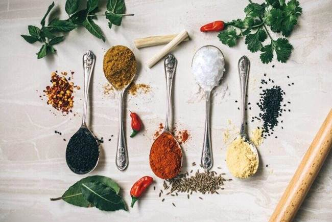
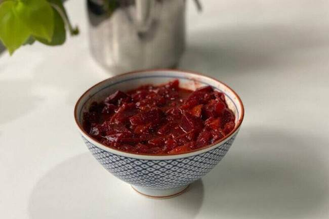
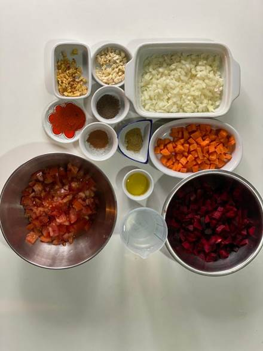
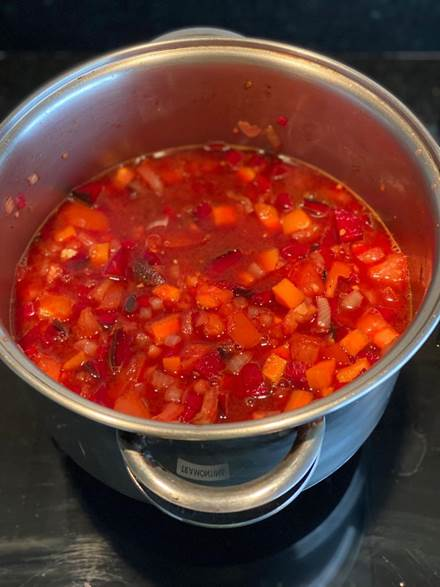

Alimentos que aceleram o metabolismo
Ingredientes como pimenta, gengibre e folhas verdes podem estimular seu organismo a queimar mais calorias

O metabolismo é responsável por transformar em energia todas as calorias que nosso consumimos. As atividades físicas têm papel fundamental neste processo, pois quanto mais gastamos energia, mais ajudamos a acelerar o nosso sistema metabólico.
Escolher melhor os alimentos que você consome é um ótimo começo, pois eles fornecem combustível para que nosso corpo funcione durante o dia. Por isso, é muito importante que você não pule refeições, principalmente o café da manhã.
Existem os chamados “alimentos termogênicos”, que induzem o metabolismo a trabalhar em um ritmo mais acelerado, o que facilita a queima de gordura. Além disso, eles melhoram a circulação sanguínea.
Lista de alimentos termogênicos
- Aveia: Alimento rico em fibras, a aveia ajuda a aumentar a saciedade e também regula o intestino;
- Pimenta vermelha: O tempero dá sabor para carnes, sopas e cozidos, aumenta a temperatura do corpo e melhora a circulação do sangue. Também diminui a gordura nas artérias;
- Gengibre: A planta pode acelerar a queima de energia em 20% e pode ser consumido cru, refogado, dissolvido em chá ou até mesmo batido com frutas;
- Canela: A especiaria ajuda na digestão e combate a flatulência. Também tem nutrientes capazes de melhorar o aspecto da pele, principalmente para quem problemas com acne;
- Café: Por conter cafeína, um estimulante natural, a bebida fornece energia para manter o ânimo no dia a dia;
- Curry: Essa mistura de temperos é ótima para dar mais sabor ao arroz ou em ser usado em massas. É um antioxidante que aumenta a imunidade;
- Água gelada: Ao beber água gelada, você obriga o corpo a trabalhar mais para voltar à temperatura corporal normal;
- Cacau: A fruta tem propriedades antioxidantes por conter cafeína e polifenóis. Essas substâncias fazem muito bem ao coração. Você pode consumir o cacau por cima de frutas ou misturar com leite;
- Linhaça: Por ter nutrientes, como carboidratos e proteínas, a semente regulariza o intestino e tem o poder de diminuir o envelhecimento celular;
- Sementa de chia: Por não ter gosto específico, a fibra, que é rica em ácidos graxos ômega 3, é mais fácil de ser incluída em pratos doces, salgados, iogurtes e sucos naturais;
- Óleo de coco: Reduz os níveis de colesterol e melhora a flora intestinal, além de equilibrar o açúcar presente no sangue. Por ser rico em ácido láurico, ele colabora com a saúde do coração e dá força para o sistema imunológico;
- Couve: Rica em vitaminas e minerais, a verdura desintoxica o organismo, evita ressacas e alivia os sintomas da prisão de ventre.
Sopa termogênica para acelerar o metabolismo
Uma receita diferente que dá água na boca

Toda família tem uma receita guardada a sete chaves. Aquela, que a vovó não quer revelar para ninguém – mas a gente quer descobrir de todo jeito. A família Baguette, do filme Minha Família Perfeita, é uma dessas – e embora não tenha conseguido a receita da sopa de pimenta calabresa que marcou a vida de todas as namoradas do Fred, conseguimos uma substituta termogênica, que enche os olhos, acelera seu metabolismo, é supersaborosa e, se você quiser, até dá para acrescentar aquele toque de pimenta calabresa para finalizar.
Não dá para perder, né?
Dica da nutri: A sopa se torna termogênica por conta do gengibre e da canela, consequentemente, aumenta o metabolismo e é ótima para quem deseja diminuir a porcentagem de gordura. Quando alinhada a treino e dieta, potencializa ainda mais os resultados.
Outro ponto muito positivo dessa receita, é o fato dela conter beterraba, que é um legume que ajuda o músculo a obter oxigênio mais rápido e diminui o esforço que o coração precisa fazer para levar o sangue e oxigênio até a nossa musculatura durante a prática de exercício físico.
Isso acontece por conta dos nitratos que a beterraba possui. O nosso corpo converte o nitrato em óxido nítrico, que faz com que a gente dilate os vasos sanguíneos, diminuindo a pressão, e consequentemente, demorando mais tempo para a fadiga muscular acontecer.
E que isso significa? Que a gente consegue treinar pesado por mais tempo e os resultados aparecem mais rápido.
A melhor parte é que ela é superfácil de fazer. Vem com a gente seguir a receita:
Sopa termogênica vermelha
Ingredientes

- 1 colher (sopa) de azeite extra virgem;
- 1 cebola média cortada em cubos;
- 3 dentes de alho picados;
- 5 tomates médios com cascas e sementes cortados em pedaços pequenos;
- 1 beterraba grande com casca e cortada em pedaços pequenos;
- 1 cenoura média com casca, cortada em pedaços pequenos;
- ½ colher (chá) de cominho moído;
- ½ colher (chá) de pimenta do reino;
- 10g de gengibre;
- ½ colher (chá) de canela em pó;
- 1 colher (chá) de páprica;
- 1 colher (chá) de sal;
- 500 ml de água.
Forma de preparo:

- Em uma panela grande, aqueça o azeite.
- Adicione a cebola e o alho e cozinhe em fogo moderado, mexendo sempre, até amolecer, por 3 minutos.
- Adicione os tomates, as beterrabas, as cenouras, o gengibre e os temperos: cominho, pimenta, canela e a páprica.
- Tempere com sal e adicione água suficiente até cobrir os legumes.
- Deixe ferver, tampe parcialmente e cozinhe em fogo baixo até que as hortaliças estejam bem macias, por cerca de 1 hora.
- Retire do fogo e deixe descansar por pelo menos 30 minutos para permitir que os sabores se desenvolvam.
Dica: Pode ser consumido em várias texturas, em pedacinhos ou em forma de
creme, é só amassar com um amassador de batata para ficar na forma de purê.
Se preferir em forma de sopa creme mais líquida, bata no liquidificador/mixer com ½ copo (100 ml) de água quente.
A sopa tem 108 kcal, rende 4 porções e pode ser refrigerada por até 3 dias.
Alimentos termogênicos para consumir no inverno!
Agora no frio é comum nosso corpo pedir alimentos que nos esquentam. E se eu contar que dá para usar esse mecanismo usando alimentos termogênicos e emagrecer?
Com a chegada do frio, queremos consumir alimentos que nos esquentam, e já imaginou existir alimentos que nos deixem aquecidos e ainda auxiliarem no emagrecimento? Por conta disso, vim conversar com vocês sobre alimentos termogênicos.
Alimentos termogênicos
Esses alimentos podem aumentar o nosso gasto calórico, o intuito de consumi-los é melhorar a eficiência da queima de gordura.
Quando falamos de um alimento que aumenta a temperatura do corpo, ele possui capacidade de auxiliar na queima de gorduras, que consequentemente impacta na redução do percentual de gordura corporal.
Gengibre é um dos alimentos termogênicos
Ele é conhecido pelo seu potencial termogênico, ele aumenta a temperatura do corpo ajudando a gastar mais calorias.
Além disso, estudos mostram que o gengibre ajuda na redução da sensação de fome, o que contribui para o controle do peso.
A melhor maneira de consumi-lo é em receitas doces e salgadas. A raiz pode ser fina ou ralada para ser usada em molhos, refeições orientais, bolos, biscoitos, pães e bebidas quentes.
Pimenta vermelha é um dos alimentos termogênicos
A capsaicina é um componente que está presente na pimenta, e é ela que possui o efeito de “calor” após ser consumida.
A pimenta é capaz de aumentar a temperatura corporal com eficiência, assim ela auxilia acelerar o metabolismo, colaborando na queima de calorias.
A melhor maneira de consumi-la é ela em seu estado mais natural possível. Ela combina bem com as preparações do dia a dia, como carne, frango, peixe, arroz, salada, caldos, molhos e omeletes, por exemplo.
Pode ser inclusa até mesmo em chás quando misturado com suco de limão.
E a canela? Também é?
A canela aumenta a circulação sanguínea e a temperatura do corpo o que faz com que o metabolismo trabalhe mais.
Sua ingestão faz com que o corpo gaste mais calorias.
Além disso, um estudo publicado pelo Clinical Nutrition, a canela pode melhorar os índices glicêmicos e o perfil lipídico de pacientes com diabetes tipo II.
É necessário entender que esses alimentos não possuem a capacidade de gerar um emagrecimento sustentável já que são apenas uma ferramenta auxiliar.
Importante!
O que realmente vai trazer resultado (e garantir a manutenção do peso) é uma dieta adequada alinhada a um programa de exercícios.
https://www.smartfit.com.br/news/nutricao/alimentos-aceleram-metabolismo/
https://www.smartfit.com.br/news/nutricao/sopa-termogenica/
https://www.smartfit.com.br/news/nutricao/alimentos-termogenicos-para-consumir-no-inverno/